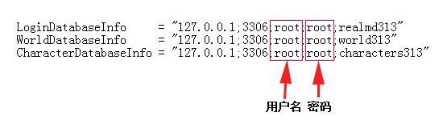
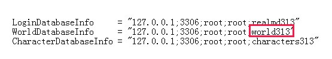

软件无法运行？
1.72版本软件需要.NET Frameword 3.5运行环境，win7/win8自带，vista或更早版本windows系统请下载该安装包手动安装。
2.0版本需要.NET Frameword 4.0运行环境，win8自带，win7或更早版本windows系统点击这里下载安装包。
如何填写连接信息？
在服务端根目录找到配置文件（扩展名为.conf），使用记事本打开，搜索以下任意一行文本内容：
LoginDatabaseInfo
WorldDatabaseInfo
CharacterDatabaseInfo
应找到如下图所示的文本内容

填写用户名和密码之后，展开数据库下拉菜单，稍等片刻会看到所有数据库名称列表，选择world或mangos（或相似名称），也可以直接在配置文件中获取数据库名称。

添加/修改/删除物品后，为何没有生效？
修改物品信息之后，必须重新启动服务端才能生效。
在大灾变及以上版本的服务端中，默认情况下无法新建物品，而且修改已有物品之后在物品描述中不会显示更改，但装备后有实际效果。